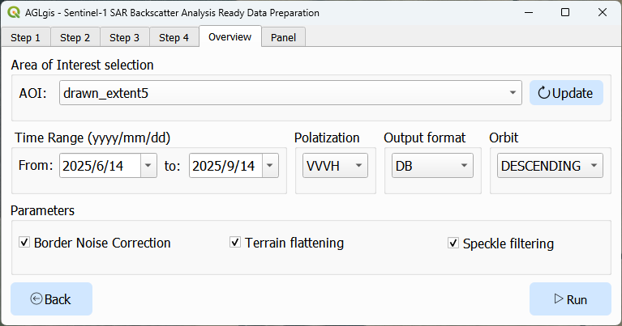

AGLgis
O AGLgis é uma interface gráfica para facilitar do Sentinel-1 SAR Backscatter Analysis Ready Data Preparation in Google Earth Engine no QGIS.
Este plugin permite configurar e executar o processamento de dados SAR Sentinel-1 sem necessidade de programação.
Principais funcionalidades
- Interface gráfica para seleção de área, datas e parâmetros de processamento.
- Integração direta com o pacote
ee-s1-ard, tornando o fluxo de trabalho mais acessível. - Suporte à correção de ruído de borda, nivelamento de terreno e filtragem de speckle.
- Exportação dos resultados prontos para análise e visualização.
Parâmetros suportados
Exemplo de Série Temporal e Imagem Selecionada

Acima, uma demonstração da série temporal gerada pelo plugin e uma imagem SAR da data selecionada.
Configuração do Projeto Google Cloud
A imagem acima mostra onde encontrar o ID do seu Projeto Google Cloud, necessário para autenticar e executar o pacote ee-s1-ard no Google Earth Engine.
Certifique-se de ter um projeto válido no Google Cloud Console e utilize o ID ao configurar o plugin.
Citação
Qualquer trabalho publicado que utilize este plugin deve citar a seguinte referência como fonte do framework de processamento:
Mullissa, A.; Vollrath, A.; Odongo-Braun, C.; Slagter, B.; Balling, J.; Gou, Y.; Gorelick, N.; Reiche, J. Sentinel-1 SAR Backscatter Analysis Ready Data Preparation in Google Earth Engine. Remote Sens. 2021, 13, 1954. https://doi.org/10.3390/rs13101954